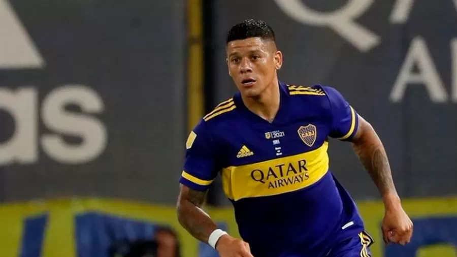

Zagueiro Marcos Rojo é um dos jogadores do Boca que estão suspensos
Lanterna do E da Copa Libertadores da América, o Corinthians irá hoje em busca da sua segunda vitória na competição contra um adversário "meia boca"
O trocadilho (péssimo, por sinal) reflete bem a situação do Boca Juniors na principal competição interclubes do clube. A tradicional equipe argentina está tendo de encarar a fase de grupo sem, literalmente, meio time.
O segundo maior vencedor da história do torneio (seis títulos, um a menos que o Independiente) está tendo que encarar a etapa classificatória sem seis dos seus jogadores ainda em decorrência da confusão armada com seguranças do Mineirão e integrantes da comissão técnica do Atlético-MG na temporada passada.
O capitão Carlos Izquierdoz, o zagueiro Marcos Rojo, o meia Diego González e o meia-atacante Sebastián Villa ainda cumprem suspensão pelo incidente, mas foram inscritos na competição. Já o goleiro Javier García acabou de cumprir sua pena na rodada passada e está à disposição para enfrentar o Corinthians.
A estreia foi com derrota (2 a 0 para o Deportivo Cali, na Colômbia). Depois, veio uma vitória de pouco parâmetro pelo mesmo placar sobre o Always Ready, da Bolívia, o adversário mais fraco da chave. Juan citouDisponivel em meusite.com.br 